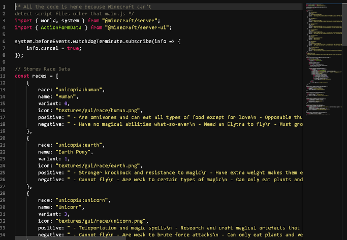

I can program websites, basic programs that can process data, and code addons for a game called Minecraft.
Programming languages that I'm familiar with are JavaScript, Python, HTML, and CSS.
While in elementary school, I learned a bit of JavaScript and continued learning it in college. Here is an example of JavaScript code I wrote for the Minecraft scripting engine.
During my time in college, I learned web development and now I know how to use HTML and CSS effectively. Here's an image of the code of one the projects I worked on while I studied in college.
I have made and tested various addons for Minecraft. Through persistent research I learned various thing that one can do with an addon. One of the addons I helped make is a port of a mod called Mine Little Pony.